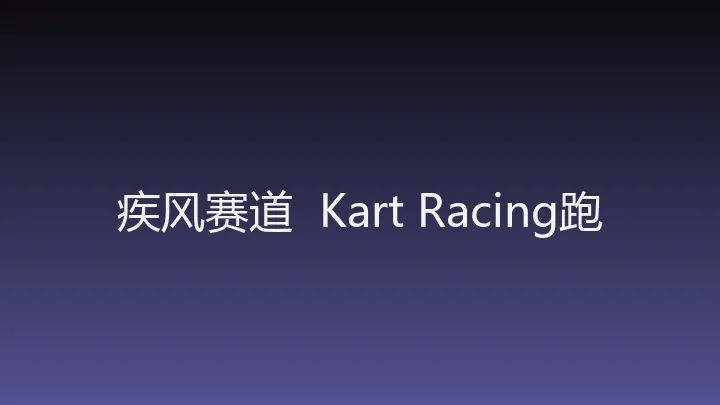

🎮 AI 生成游戏 · 精选收录
疾风赛道 / Kart Racing（跑跑卡丁车）
通过漂移积攒氮气，在三圈竞速中使用道具争夺名次；当前游戏名为“疾风赛道”，提供 2–4 人联机入口。
📥 本页收录自开源目录 awesome-gpt-6-astra（GPT-6 Astra 生成游戏精选），游戏版权归原作者所有。链接失效？报告失效链接

🚀 前往原站游玩
该游戏由作者托管在第三方平台，点击后将跳转到原站新窗口游玩
通过漂移积攒氮气，在三圈竞速中使用道具争夺名次；当前游戏名为“疾风赛道”，提供 2–4 人联机入口。
